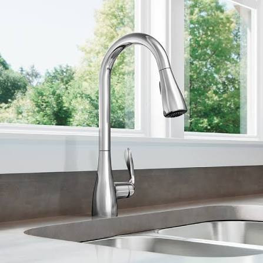

Sara L. Cliente verificadoHace 2 días
★★★★★
Llegó en 35 minutos un domingo por una fuga urgente. Muy profesional, limpio y transparente con el precio.

Plomero Maestro Certificado y Técnico en Climatización
Diagnóstico y soldadura de tuberías
Sonda motorizada de alto rendimiento
Instalación, con gestión de permisos incluida


128 opiniones
Llegó en 35 minutos un domingo por una fuga urgente. Muy profesional, limpio y transparente con el precio.
Reemplazó nuestro calefón. Trabajo limpio y me explicó todo antes de comenzar.
Buena comunicación y tarifa de diagnóstico justa. Encontró un problema que otro técnico no había visto.